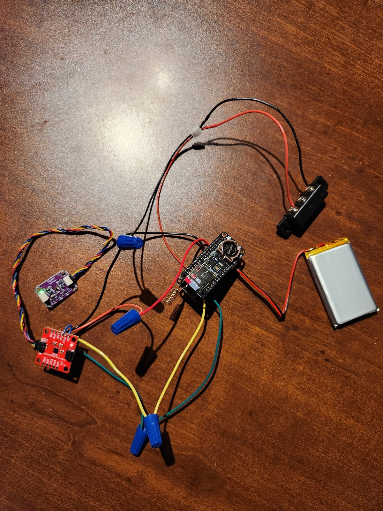
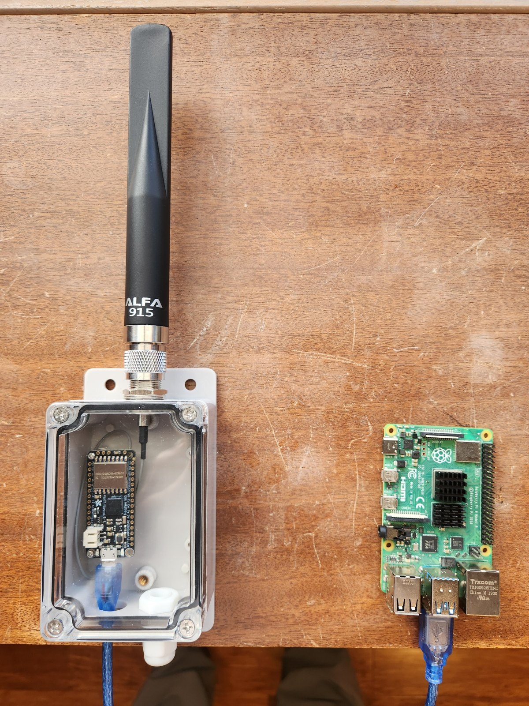
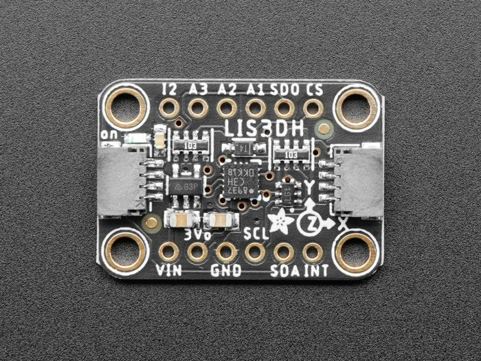
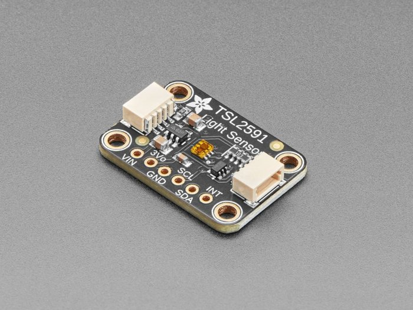
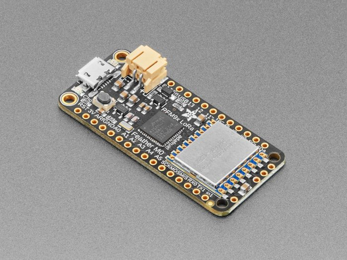
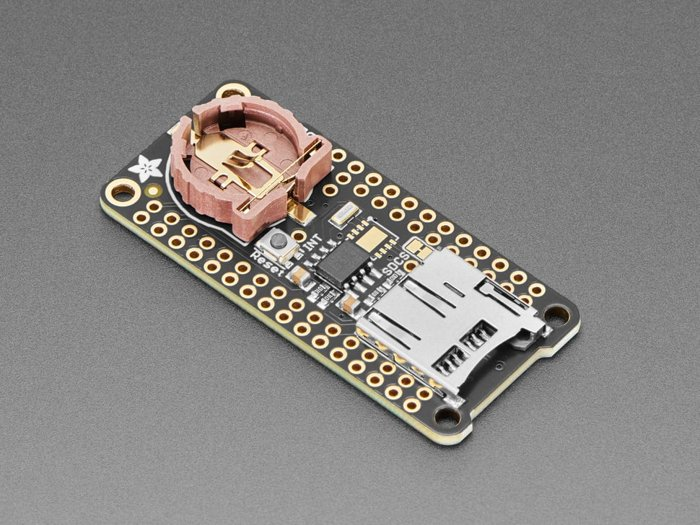
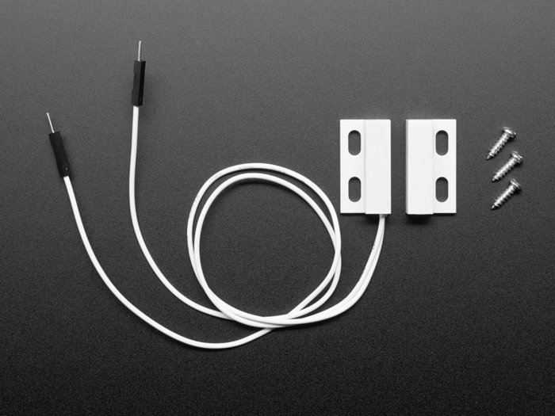
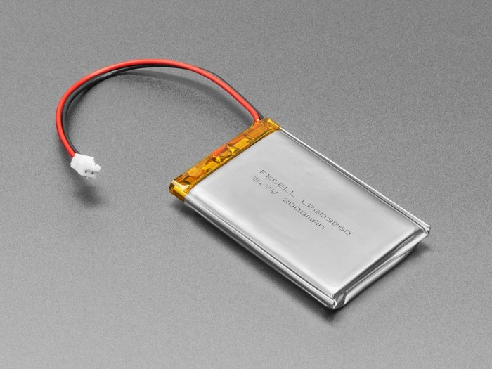
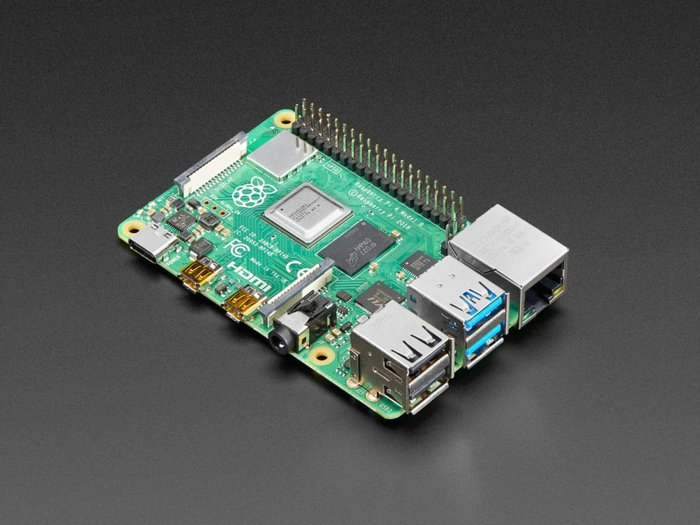

Movement after a quiet period may indicate a haul.
01 / A deployment, explained
From magnet off
to “something moved.”
The monitor follows a simple pattern: start recording, look for settling, then watch for renewed movement. Select a stage to see what it does.
ACTIVE MONITORING
Remove the magnet.
The electronics start a new session. The pot records sensor data and begins radio attempts, whether it is bright or dark.
Sample log: about every 5 sRadio attempts: about every 10 s
Illustrated operating sequence, not live telemetry. The exact timing depends on sensing, storage and radio work.
02 / The decision
A pattern of movement,
not a depth measurement.
The accelerometer is the motion sensor. It helps the system distinguish an active pot from one that appears to have settled. This is the logic behind the alert.
03 / What the sensors see
Movement tells the story.
Light adds context.
These illustrative graphs show the idea—not measurements from a real deployment. Switch between day and night: the motion pattern can trigger the same possible-retrieval event in either case.
Movement over a deployment
Illustrative motion intensity · relative scale
Light over the same sequence
Illustrative brightness · daytime example · relative scale
In daylight, brightness may increase as a pot is raised. That helps explain the conditions, but brightness alone does not create a retrieval alert.
04 / From pot to phone
The pot uses radio.
The shore station uses the internet.
The pot does not need its own cellular connection. It keeps records locally, while a nearby shore station handles messages that successfully arrive.
Sense + save
Light, motion and event history stay on the SD card.
Send toward shore
LoRa carries short messages when the signal can get through.
Receive + record
The shore Feather passes messages to a Raspberry Pi. The Pi stores each event before acknowledging receipt.
Public status
See the last reported activity, light, motion and battery information through Tailscale Funnel. Open the dashboard ↗
Phone notification
Pushover delivers a possible-retrieval notification when the event reaches shore and internet delivery succeeds.
ILLUSTRATIVE NOTIFICATION
Poachinator5000
Example only · not a live alertPossible crab pot retrieval
Pot 3001 moved after previously settling.
Check the event time and local conditions. Movement does not confirm theft.
What if the signal cannot get through?
Submerged radio attempts usually do not reach shore. Pending events stay on the SD card for a later active radio opportunity. Internet outages can also delay phone delivery.
Submerged radio attempts usually do not reach shore. Pending events stay on the SD card for a later active radio opportunity. Internet outages can also delay phone delivery.
The actual hardware
On the pot. On the shore.
Two parts work together: a battery-powered monitor records activity on the pot, and an internet-connected base station receives its radio messages.

Sense, record, transmit.
The prototype electronics before enclosure installation: sensors, microSD storage, radio, magnetic power control, and rechargeable battery.

Receive, store, notify.
The enclosed Feather receiver and external 915 MHz antenna connect by USB to the Raspberry Pi, which serves the dashboard and sends phone alerts.
Project photos · Select either photo to open it at full size.
05 / Meet the hardware
Small components.
Each with one clear job.
These are product photos of the main components. Most live inside the pot enclosure; the Raspberry Pi and receiving radio stay on shore.

Movement sensor
LIS3DH accelerometer
Measures changes in motion along three axes. Movement followed by stillness helps the system infer that the pot has settled.
Photo & product: Adafruit ↗
Light sensor
TSL2591
Looks through the clear lid and records brightness. Light gives context; it does not decide that the pot has reached the bottom.
Photo & product: Adafruit ↗
Onboard computer + radio
Feather M0 with RFM95
Interprets the sensors and sends small radio messages toward shore. A second Feather receives them at the base station.
Photo & product: Adafruit ↗
Memory + clock
Adalogger FeatherWing
Adds the SD card slot and a backup clock. Local event records can remain available when the radio link is out of reach.
Photo & product: Adafruit ↗
Magnetic control
Reed switch + magnet
Place the magnet near the box to stop the main electronics. Remove it to begin a new monitoring session.
Photo & product: Adafruit ↗
Portable power
3.7 V · 2000 mAh battery
Powers the pot unit without a cable to shore. How often the pot moves and transmits affects how long it lasts.
Photo & product: Adafruit ↗
Shore computer
Raspberry Pi 4
Stores received events, sends phone notifications and serves a public browser status page. Photo shows the 4 GB variant; the design also allows 2 GB.
Photo & product: Adafruit ↗PN-1337-ACMB
The selected clear-lid enclosure houses the pot electronics. The light sensor looks through the lid; the motion sensor is fixed firmly inside.
Enclosure illustration, not a product photo. The selected enclosure has not been qualified here for prolonged deep submersion.
Manufacturer’s enclosure page ↗Product photos: Adafruit, linked on each card. Images show component examples and board revisions; they are not photographs of a completed monitor. Antennas, SD card, indicator LED and wiring complete the assembly.
06 / Why quiet time matters
Listening uses less power
than repeatedly transmitting.
The design aims for a two-week deployment. That depends on real battery capacity, SD card consumption and how much time the pot spends actively recording and trying to send.
Estimated power demand
Planning estimates for the whole pot unit—not measured results.
Bars share a 0–25 mA scale. The active estimate includes frequent failed radio attempts. A constantly active pot can run out far sooner than two weeks.
mAh
Estimated use over 14 days
About 62% of an assumed 1600 mAh usable battery.
Illustration: settled at 2.7 mA, active at 24.7 mA, plus 15 mAh margin. These assumptions require physical validation; the slider is not a battery-life prediction.
System reference
One system. Three views.
Explore what the system does, how information moves, and how the hardware connects.
01 / PURPOSE & CAPABILITIES
Functional diagram
What the system does, without requiring knowledge of the boards, code, or communication protocols.
ObserveMeasure activity and environmental context.
RememberRetain local evidence when radio is unavailable.
NotifyAlert the owner when shore receives a possible-retrieval event.
02 / SOFTWARE & INFORMATION
Logical diagram
How measurements become state changes, stored records, authenticated messages, and phone notifications. Solid arrows show forward processing; dashed arrows show acknowledgment.
Motion-driven state machine & external A0 LED
| Rule | Current implementation |
|---|---|
| Moving window | Largest X/Y/Z peak-to-peak span ≥80 mg. Require 3 consecutive valid windows. |
| Quiet window | Span ≤30 mg. Require 60 consecutive valid windows after movement has been observed. |
| Reset confirmation | Invalid readings reset both counts. Values between 30 and 80 mg reset both counts. Stable state remains unchanged. |
| Timing | D → R is roughly 4 seconds of sustained sampled movement. Active → D often takes 1½–3 minutes of uninterrupted stillness. SD/radio work and retries add gaps; these are not guaranteed timers. |
| Restart | Every reboot returns the live state to deployment logging. Pending SD events survive when storage is intact. B is a startup event, not a stuck bootloader. |
| LED exceptions | Repeating double flashes mean a fatal error. Off can also mean no power or calibration mode. Retrieval flashes may pause during radio/SD work. The bootloader can still use the onboard LED during uploads. |
Why the dashboard may still show B: the pot stops routine radio attempts after D. The queued D event may not reach shore until later movement. The local LED reflects the pot’s current state; the dashboard reflects the latest received heartbeat and becomes stale after 180 seconds without one.
03 / BOARDS, WIRES & CONNECTIONS
Physical diagram
The pot assembly, shore equipment, power sources, and communication links. Boxes show connection relationships, not scale or exact enclosure placement.
Connection reference
| From | To | Purpose / constraint |
|---|---|---|
| Feather 3V / GND | TSL2591 VIN / GND; LIS3DH 3V3 / GND | Use the switched 3.3 V supply. Do not substitute BAT or USB power. |
| Feather SDA / SCL | Both sensors + Adalogger RTC | Shared I²C bus. Qwiic/STEMMA QT cables can daisy-chain sensors; verify breakout cable pin order. |
| SparkFun LIS3DH ADDR | GND | Selects 0x18, matching current firmware. TSL2591 uses 0x29; RTC uses 0x68. |
| Feather EN | Reed switch → GND | Contact closed with magnet present disables regulator. This is not full battery isolation. |
| Feather A0 | 680 Ω resistor → red LED anode | LED cathode → GND. External LED replaces application status use of onboard D13. Shield sensor from LED light. |
| Feather headers | Adalogger FeatherWing headers | Feather below, Adalogger above. D10 = SD chip select; SPI shared with radio. Inner duplicate holes can access the same nets. |
| Feather reserved pins | Onboard radio / battery divider | D8 = radio CS; D3 = IRQ; D4 = reset. D9/A7 = battery measurement. Do not repurpose. |
| Pot spring antenna | Feather ANT pad | 915 MHz. Keep attached during radio operation and away from metal/battery where practical. |
| Shore Feather micro-USB | Pi USB-A port | Data cable supplies power and carries serial packets. Shore battery is not required. |
Deployment limits: LoRa does not provide a dependable link through seawater. The chosen enclosure’s published rating does not establish survival at crab-pot depths. Validate sealing, actual radio range, motion thresholds, and battery endurance before unattended deployment.